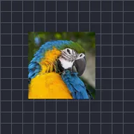

Spostamento casuale

Sposta automaticamente il livello in modo fluido e casuale nel tempo. Seme sceglie un movimento diverso, Velocità ne regola la rapidità ed Evoluzione modifica il motivo.
Spostamento casuale muove il livello in modo morbido e casuale, come una fotocamera che deriva. Ampiezza indica quanto vaga, Velocità quanto rapidamente, e Seme sceglie un percorso diverso. A differenza di Scuotimento automatico, il movimento è lento e fluido invece che a scatti.
Impostazioni
| Impostazione | Tipo | Intervallo | Predefinito |
|---|---|---|---|
| Ampiezza | Numero | Da 0 a 2000 | 50 |
| Evoluzione | Numero | Da 0 a 2000 | 0 |
| Seme | Numero | Da 0 a 5 | 0 |
| Dispersione | Numero | Da 0% a 200% | 50% |
| Velocità | Numero | Da 0 a 50 | 1 |